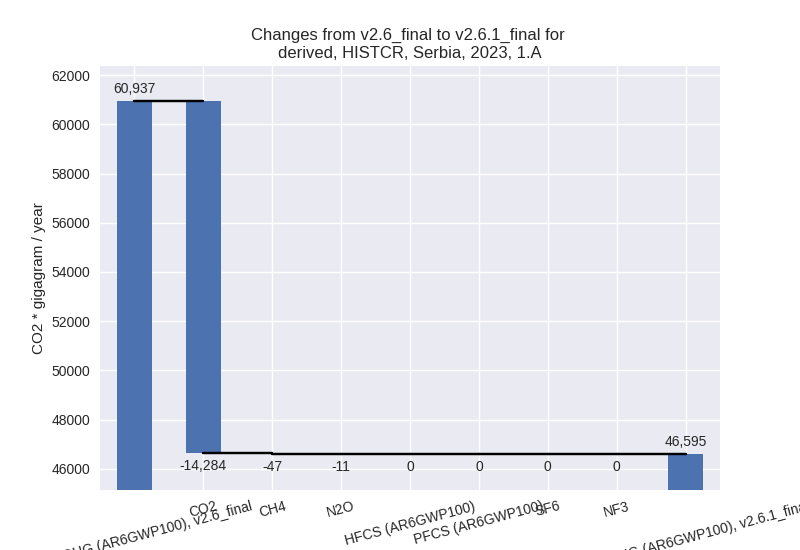
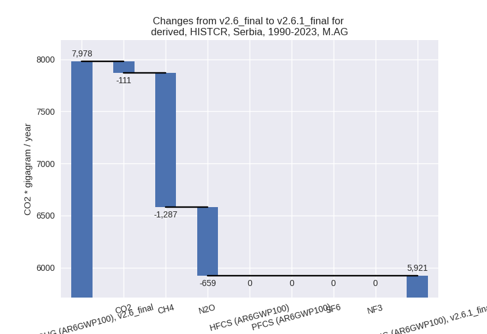

Changes in PRIMAP-hist v2.6.1_final compared to v2.6_final for Serbia
2025-03-19
Johannes Gütschow
Change analysis for Serbia for PRIMAP-hist v2.6.1_final compared to v2.6_final
Overview over emissions by sector and gas
The following figures show the aggregate national total emissions excluding LULUCF AR6GWP100 for the country reported priority scenario. The dotted linesshow the v2.6_final data.
The following figures show the aggregate national total emissions excluding LULUCF AR6GWP100 for the third party priority scenario. The dotted linesshow the v2.6_final data.
Overview over changes
In the country reported priority scenario we have the following changes for aggregate Kyoto GHG and national total emissions excluding LULUCF (M.0.EL):
- Emissions in 2023 have changed by -18.4%% (-14008.92 Gg CO2 / year)
- Emissions in 1990-2023 have changed by -6.4%% (-4543.13 Gg CO2 / year)
In the third party priority scenario we have the following changes for aggregate Kyoto GHG and national total emissions excluding LULUCF (M.0.EL):
- Emissions in 2023 have changed by 0.2%% (124.72 Gg CO2 / year)
- Emissions in 1990-2023 have changed by 0.5%% (302.46 Gg CO2 / year)
Most important changes per scenario and time frame
In the country reported priority scenario the following sector-gas combinations have the highest absolute impact on national total KyotoGHG (AR6GWP100) emissions in 2023 (top 5):
- 1: 1.A, CO2 with -14284.41 Gg CO2 / year (-23.8%)
- 2: 2, CO2 with 2724.11 Gg CO2 / year (120.2%)
- 3: 1.B.2, CH4 with 809.21 Gg CO2 / year (292.9%)
- 4: 3.A, CH4 with -703.92 Gg CO2 / year (-20.6%)
- 5: M.AG.ELV, N2O with -601.71 Gg CO2 / year (-28.6%)
In the country reported priority scenario the following sector-gas combinations have the highest absolute impact on national total KyotoGHG (AR6GWP100) emissions in 1990-2023 (top 5):
- 1: 1.A, CO2 with -3338.12 Gg CO2 / year (-6.4%)
- 2: 3.A, CH4 with -1257.12 Gg CO2 / year (-25.8%)
- 3: 1.B.2, CH4 with 885.77 Gg CO2 / year (259.5%)
- 4: 2, CO2 with 801.71 Gg CO2 / year (26.8%)
- 5: M.AG.ELV, N2O with -787.20 Gg CO2 / year (-32.7%)
In the third party priority scenario the following sector-gas combinations have the highest absolute impact on national total KyotoGHG (AR6GWP100) emissions in 2023 (top 5):
- 1: M.AG.ELV, N2O with 617.50 Gg CO2 / year (29.4%)
- 2: M.AG.ELV, CO2 with -454.47 Gg CO2 / year (-75.7%)
- 3: 2, CO2 with 271.37 Gg CO2 / year (15.1%)
- 4: 1.B.2, CO2 with 242.96 Gg CO2 / year (785.3%)
- 5: 3.A, CH4 with -210.55 Gg CO2 / year (-6.2%)
In the third party priority scenario the following sector-gas combinations have the highest absolute impact on national total KyotoGHG (AR6GWP100) emissions in 1990-2023 (top 5):
- 1: M.AG.ELV, N2O with 243.27 Gg CO2 / year (10.1%)
- 2: 1.B.2, CO2 with 231.96 Gg CO2 / year (2123.9%)
- 3: 4, CH4 with -132.74 Gg CO2 / year (-7.0%)
- 4: 1.B.2, CH4 with -127.76 Gg CO2 / year (-37.4%)
- 5: 2, SF6 with 52.96 Gg CO2 / year (inf%)
Notes on data changes
Here we list notes explaining important emissions changes for the country.
- CRT data from BTR1 has been included covering 1990-2022. It replaces
and extends NC2 data.
- The new data leads to much lower emissions mainly because of a much lower estimate of 2020 emissions. 2020 was the last datapoint of the NC2 data and did not show a Covid-19 related emissions reduction. The EI data used for extrapolation did show this and thus had a high growth for 2021 leading to higher post 2020 emissions.
- CO2 from 2.C is much higher after 2014 because the CRT data shows a steep emissions increase which the EDGAR data used to extrapolate NC2 data does not show.
- CH4 emissions in 1.B.2 are available from country reported data for the first time and replace EDGAR for the CR time-series.
- CH4 emissions in 3.A are also available from country reported data for the first time and replace FAO emissions data.
- In the TP time-series changes come directly from new EDGAR and FAO
data. Changes in M.AG.ELV are especially high, because the sector has a
very high year to year fluctuation which makes extrapolation uncertain.
- Changes in M.AG.ELV, N2O pre 2006 come from higher emissions for the Serbia-Montenegro region in FAO
Changes by sector and gas
For each scenario and time frame the changes are displayed for all individual sectors and all individual gases. In the sector plot we use aggregate Kyoto GHGs in AR6GWP100. In the gas plot we usenational total emissions without LULUCF.
country reported scenario
2023
1990-2023
third party scenario
2023
1990-2023
Detailed changes for the scenarios:
country reported scenario (HISTCR):
Most important changes per time frame
For 2023 the following sector-gas combinations have the highest absolute impact on national total KyotoGHG (AR6GWP100) emissions in 2023 (top 5):
- 1: 1.A, CO2 with -14284.41 Gg CO2 / year (-23.8%)
- 2: 2, CO2 with 2724.11 Gg CO2 / year (120.2%)
- 3: 1.B.2, CH4 with 809.21 Gg CO2 / year (292.9%)
- 4: 3.A, CH4 with -703.92 Gg CO2 / year (-20.6%)
- 5: M.AG.ELV, N2O with -601.71 Gg CO2 / year (-28.6%)
For 1990-2023 the following sector-gas combinations have the highest absolute impact on national total KyotoGHG (AR6GWP100) emissions in 1990-2023 (top 5):
- 1: 1.A, CO2 with -3338.12 Gg CO2 / year (-6.4%)
- 2: 3.A, CH4 with -1257.12 Gg CO2 / year (-25.8%)
- 3: 1.B.2, CH4 with 885.77 Gg CO2 / year (259.5%)
- 4: 2, CO2 with 801.71 Gg CO2 / year (26.8%)
- 5: M.AG.ELV, N2O with -787.20 Gg CO2 / year (-32.7%)
Changes in the main sectors for aggregate KyotoGHG (AR6GWP100) are
- 1: Total sectoral emissions in 2022 are 49327.66 Gg
CO2 / year which is 78.5% of M.0.EL emissions. 2023 Emissions have
changed by -21.9% (-13646.16 Gg CO2
/ year). 1990-2023 Emissions have changed by -4.1% (-2275.73 Gg CO2 / year). For 2023
the changes per gas
are:
For 1990-2023 the changes per gas are:
The changes come from the following subsectors:- 1.A: Total sectoral emissions in 2022 are 47191.95
Gg CO2 / year which is 95.7% of category 1 emissions. 2023 Emissions
have changed by -23.5% (-14341.85 Gg
CO2 / year). 1990-2023 Emissions have changed by -6.3% (-3340.94 Gg CO2 / year). For 2023
the changes per gas
are:

For 1990-2023 the changes per gas are:
There is no subsector information available in PRIMAP-hist. - 1.B.1: Total sectoral emissions in 2022 are 980.30
Gg CO2 / year which is 2.0% of category 1 emissions. 2023 Emissions have
changed by -10.6% (-106.40 Gg CO2 /
year). 1990-2023 Emissions have changed by -27.7% (-433.81 Gg CO2 / year). For 2023
the changes per gas
are:
For 1990-2023 the changes per gas are:
There is no subsector information available in PRIMAP-hist. - 1.B.2: Total sectoral emissions in 2022 are 1155.41
Gg CO2 / year which is 2.3% of category 1 emissions. 2023 Emissions have
changed by 261.0% (802.09 Gg CO2 /
year). 1990-2023 Emissions have changed by 425.5% (1499.03 Gg CO2 / year). For 2023
the changes per gas
are:
For 1990-2023 the changes per gas are:
There is no subsector information available in PRIMAP-hist.
- 1.A: Total sectoral emissions in 2022 are 47191.95
Gg CO2 / year which is 95.7% of category 1 emissions. 2023 Emissions
have changed by -23.5% (-14341.85 Gg
CO2 / year). 1990-2023 Emissions have changed by -6.3% (-3340.94 Gg CO2 / year). For 2023
the changes per gas
are:
- 2: Total sectoral emissions in 2022 are 5174.95 Gg
CO2 / year which is 8.2% of M.0.EL emissions. 2023 Emissions have
changed by 47.9% (1697.10 Gg CO2 /
year). 1990-2023 Emissions have changed by 2.4% (99.41 Gg CO2 / year). For 2023 the
changes per gas
are:
For 1990-2023 the changes per gas are: - M.AG: Total sectoral emissions in 2022 are 4922.67
Gg CO2 / year which is 7.8% of M.0.EL emissions. 2023 Emissions have
changed by -25.0% (-1620.69 Gg CO2 /
year). 1990-2023 Emissions have changed by -25.8% (-2057.29 Gg CO2 / year). For 2023
the changes per gas
are:
For 1990-2023 the changes per gas are:

The changes come from the following subsectors:- 3.A: Total sectoral emissions in 2022 are 3129.90
Gg CO2 / year which is 63.6% of category M.AG emissions. 2023 Emissions
have changed by -16.8% (-616.30 Gg
CO2 / year). 1990-2023 Emissions have changed by -21.5% (-1128.90 Gg CO2 / year). For 2023
the changes per gas
are:
For 1990-2023 the changes per gas are:
There is no subsector information available in PRIMAP-hist. - M.AG.ELV: Total sectoral emissions in 2022 are
1792.77 Gg CO2 / year which is 36.4% of category M.AG emissions. 2023
Emissions have changed by -35.9%
(-1004.39 Gg CO2 / year). 1990-2023 Emissions have changed by -33.9% (-928.39 Gg CO2 / year). For 2023
the changes per gas
are:
For 1990-2023 the changes per gas are:
There is no subsector information available in PRIMAP-hist.
- 3.A: Total sectoral emissions in 2022 are 3129.90
Gg CO2 / year which is 63.6% of category M.AG emissions. 2023 Emissions
have changed by -16.8% (-616.30 Gg
CO2 / year). 1990-2023 Emissions have changed by -21.5% (-1128.90 Gg CO2 / year). For 2023
the changes per gas
are:
- 4: Total sectoral emissions in 2022 are 3215.46 Gg
CO2 / year which is 5.1% of M.0.EL emissions. 2023 Emissions have
changed by -12.0% (-441.12 Gg CO2 /
year). 1990-2023 Emissions have changed by -8.8% (-317.95 Gg CO2 / year). For 2023
the changes per gas
are:
For 1990-2023 the changes per gas are: - 5: Total sectoral emissions in 2022 are 185.59 Gg
CO2 / year which is 0.3% of M.0.EL emissions. 2023 Emissions have
changed by 1.1% (1.96 Gg CO2 /
year). 1990-2023 Emissions have changed by 4.7% (8.41 Gg CO2 / year). For 1990-2023
the changes per gas
are:
third party scenario (HISTTP):
Most important changes per time frame
For 2023 the following sector-gas combinations have the highest absolute impact on national total KyotoGHG (AR6GWP100) emissions in 2023 (top 5):
- 1: M.AG.ELV, N2O with 617.50 Gg CO2 / year (29.4%)
- 2: M.AG.ELV, CO2 with -454.47 Gg CO2 / year (-75.7%)
- 3: 2, CO2 with 271.37 Gg CO2 / year (15.1%)
- 4: 1.B.2, CO2 with 242.96 Gg CO2 / year (785.3%)
- 5: 3.A, CH4 with -210.55 Gg CO2 / year (-6.2%)
For 1990-2023 the following sector-gas combinations have the highest absolute impact on national total KyotoGHG (AR6GWP100) emissions in 1990-2023 (top 5):
- 1: M.AG.ELV, N2O with 243.27 Gg CO2 / year (10.1%)
- 2: 1.B.2, CO2 with 231.96 Gg CO2 / year (2123.9%)
- 3: 4, CH4 with -132.74 Gg CO2 / year (-7.0%)
- 4: 1.B.2, CH4 with -127.76 Gg CO2 / year (-37.4%)
- 5: 2, SF6 with 52.96 Gg CO2 / year (inf%)
Changes in the main sectors for aggregate KyotoGHG (AR6GWP100) are
- 1: Total sectoral emissions in 2022 are 55138.25 Gg CO2 / year which is 83.0% of M.0.EL emissions. 2023 Emissions have changed by 0.0% (5.62 Gg CO2 / year). 1990-2023 Emissions have changed by 0.2% (123.99 Gg CO2 / year).
- 2: Total sectoral emissions in 2022 are 2816.62 Gg
CO2 / year which is 4.2% of M.0.EL emissions. 2023 Emissions have
changed by 15.2% (373.04 Gg CO2 /
year). 1990-2023 Emissions have changed by 3.3% (100.47 Gg CO2 / year). For 2023 the
changes per gas
are:
For 1990-2023 the changes per gas are: - M.AG: Total sectoral emissions in 2022 are 6485.11
Gg CO2 / year which is 9.8% of M.0.EL emissions. 2023 Emissions have
changed by -0.9% (-57.53 Gg CO2 /
year). 1990-2023 Emissions have changed by 2.5% (201.78 Gg CO2 / year). For 1990-2023
the changes per gas
are:
The changes come from the following subsectors:- 3.A: Total sectoral emissions in 2022 are 3526.25
Gg CO2 / year which is 54.4% of category M.AG emissions. 2023 Emissions
have changed by -6.2% (-228.27 Gg
CO2 / year). 1990-2023 Emissions have changed by -0.2% (-11.38 Gg CO2 / year). For 2023 the
changes per gas
are:

There is no subsector information available in PRIMAP-hist. - M.AG.ELV: Total sectoral emissions in 2022 are
2958.87 Gg CO2 / year which is 45.6% of category M.AG emissions. 2023
Emissions have changed by 6.1%
(170.75 Gg CO2 / year). 1990-2023 Emissions have changed by 7.8% (213.16 Gg CO2 / year). For 2023 the
changes per gas
are:
For 1990-2023 the changes per gas are:
There is no subsector information available in PRIMAP-hist.
- 3.A: Total sectoral emissions in 2022 are 3526.25
Gg CO2 / year which is 54.4% of category M.AG emissions. 2023 Emissions
have changed by -6.2% (-228.27 Gg
CO2 / year). 1990-2023 Emissions have changed by -0.2% (-11.38 Gg CO2 / year). For 2023 the
changes per gas
are:
- 4: Total sectoral emissions in 2022 are 1768.99 Gg
CO2 / year which is 2.7% of M.0.EL emissions. 2023 Emissions have
changed by -10.1% (-198.37 Gg CO2 /
year). 1990-2023 Emissions have changed by -6.5% (-132.19 Gg CO2 / year). For 2023
the changes per gas
are:
For 1990-2023 the changes per gas are: - 5: Total sectoral emissions in 2022 are 185.59 Gg
CO2 / year which is 0.3% of M.0.EL emissions. 2023 Emissions have
changed by 1.1% (1.96 Gg CO2 /
year). 1990-2023 Emissions have changed by 4.7% (8.41 Gg CO2 / year). For 1990-2023
the changes per gas
are: